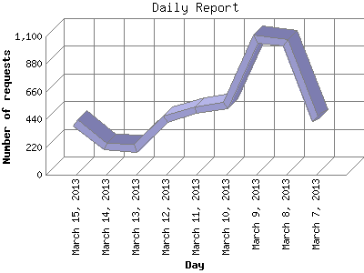

The Daily Report identifies the activity for each day within the reporting period. Remember that one page hit can result in several server requests as the images for each page are loaded.

| Day | Number of requests | Number of page requests | |
|---|---|---|---|
| 1. | March 7, 2013 | 435 | 382 |
| 2. | March 8, 2013 | 1,048 | 786 |
| 3. | March 9, 2013 | 1,081 | 891 |
| 4. | March 10, 2013 | 549 | 409 |
| 5. | March 11, 2013 | 513 | 421 |
| 6. | March 12, 2013 | 441 | 371 |
| 7. | March 13, 2013 | 209 | 154 |
| 8. | March 14, 2013 | 226 | 184 |
| 9. | March 15, 2013 | 416 | 338 |
Most active day March 9, 2013 : 891 pages sent. 1,081 requests handled.
Daily average: 437 pages sent. 546 requests handled.
This report was generated on March 15, 2013 20:04.
Report time frame March 7, 2013 14:25 to March 15, 2013 23:56.
| Web statistics report produced by: analog 5.1 / Report Magic 2.21 |